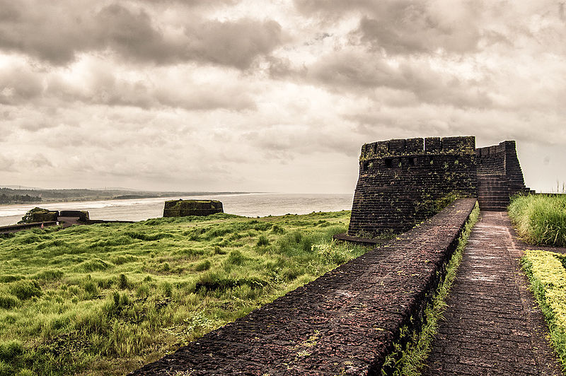
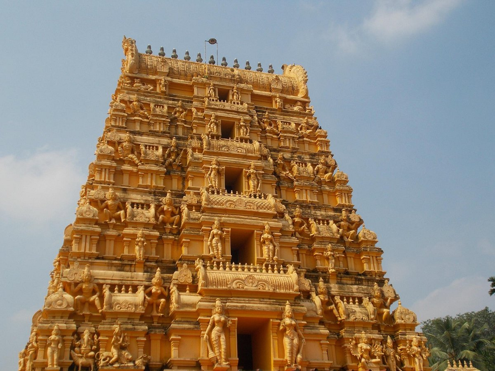

Kasaragod
Kasaragod, the northernmost state of Kerala, is replete with hills, forts and backwaters. Often described as the land of forts and gods, the place is noted for its ritual dance Theyyam, an art that blends dance, myth, drama, music, art and theatrics.
Kasaragod is almost synonymous with the magnificent fort, the Bekal Fort which is a historic structure. Other forts include the Chandragiri Fort, Hosdurg Fort, Kumbala Fort, Povval Fort, Kundamkuzhi Fort and Bandadukka Fort. The place is also popular for its ancient temples and rich biodiversity.
Other popular tourist destinations are Ranipuram, Posadi Gumpe, Valiyaparamba Backwaters etc.
Places to visit :

Bekal Fort

Ranipuram

Malla Temple

Kottancheri Hills